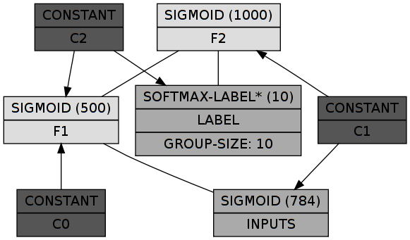
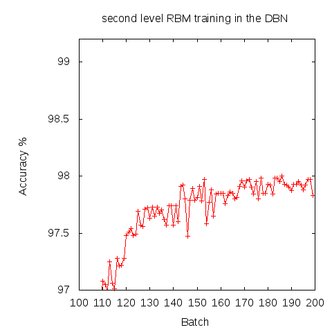
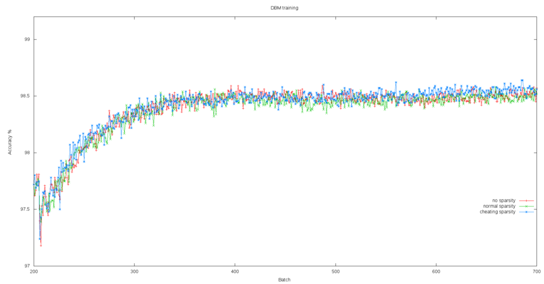
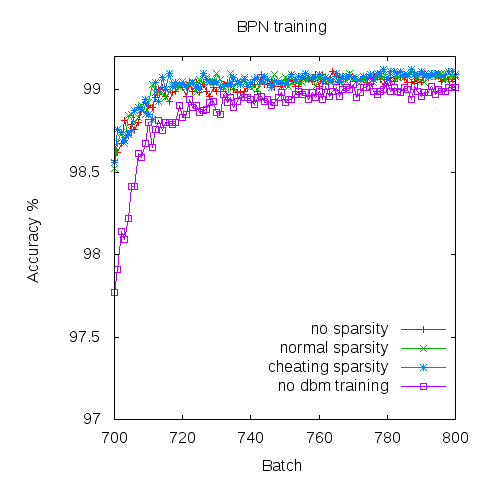

Deep Boltzmann Machine on MNIST
Tags: ai, lisp, Date: 2010-01-18
Let me interrupt the flow of the MGL introduction series with a short report on what I learnt playing with Deep Boltzmann Machines. First, lots of thanks to Ruslan Salakhutdinov, then at University of Toronto now at MIT, for making the Matlab source code for the MNIST digit classification problem available.
The linked paper claims a record of 99.05% in classification accuracy on the permutation invariant task (no prior knowledge of geometry). A previous approach trained a DBN in an unsupervised manner and fine tuned it with backpropagation. Now there is one more step: turning the DBN into a DBM (Deep Boltzmann Machine) and tune it further before handing the baton over to backprop. While in a DBN the constituent RBMs are trained one by one, the DBM is trained as a whole which, in theory, allows it to reconcile bottom-up and top-down signals, i.e. what you see and what you think.

In the diagram above, as before, dark gray boxes are constants (to
provide the connected chunks with biases), inputs are colored mid
gray while hidden features are light gray. INPUTS is where the
28x28 pixel image is clamped and LABEL is a softmax chunk for the
10 digit classes.
In the Matlab code, there are a number of prominent features that may or may not be important to this result:
The second RBM gets the the correct label as input which conveniently allows tracking classification accuracy during its training, but also - more importantly - forces the top-level features to be somewhat geared towards reconstruction of labels and thus classification.
A sparsity term is added to the gradient. Sparse representations are often better for classification.
Focusing only on what makes DBM learning tick, I tried a few variants of the basic approach. All of them start with the same DBN whose RBMs are trained for 100 epochs each:

DBN training finishes with around 97.77%, averaging 97.9% in the last 10 epochs.
On to the DBM. As the baseline, the DBM was not trained at all and the BPN did not get the marginals of the approximate posterior as inputs as prescribed in the paper, only the normal input. It's as if the DBN were unrolled into a BPN directly. Surprisingly, this baseline is already at 99.00% at the end of BPN training (all reported accuracies are averages from the last 10 epochs of training).
The second variant performs DBM training but without any sparsity term and gets 99.07%. The third is using a sparsity penalty ("normal sparsity" in the diagram) for units in opposing opposing layers on at the same time and nets 99.08%. The fourth is just a translation of the sparsity penalty from the Matlab code. This one is named "cheating sparsity" because it - perhaps in an effort to reduce variance of the gradient - changes weights according to the average activation levels of units connected by them. Anyway, this last one reaches 99.09%.


To reduce publication bias a bit, let me mention some experiments that were found to have no effect:
In an effort to see whether DBM training is held back by high variance of the gradient estimates a batch size of 1000 (instead of 100) was tested for a hundred epochs after the usual 500. There was no improvement.
In the BPN label weights and biases were initialized from the DBM. This initial advantage diminishes gradually and by the end of training there is nothing (+0.01%) between the initialized and uninitialized variants. Nevertheless, all results and diagrams are from runs with label weights initialized.
The matlab code goes out of its way to compute negative phase statistics from the expectations of the units in
F1andF2supposedly to help with variance of estimates and this turned out to be very important: with the same calculation based on the sampled values DBM classification deteriorated. Using the expectations for chunksINPUTSandLABELdid not help, though.
What I take home from these experiments is that from the considerable edge of DBM over DBN training only a small fraction remains by the end of BPN training and that the additional sparsity constraint accounts for very little in this setup.